NWP Products

Gauradaha (140801)
Jhapa
| 1 hours | 0 mm |
| 3 hours | 0 mm |
| 6 hours | 6.2 mm |
| 12 hours | 6.4 mm |
| 24 hours | 6.4 mm |
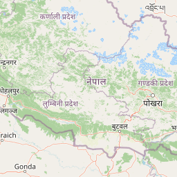
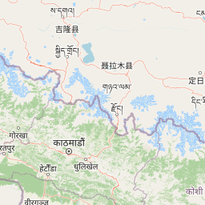
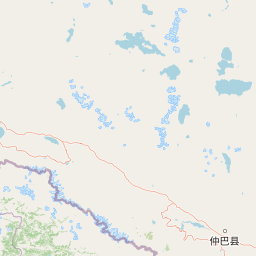
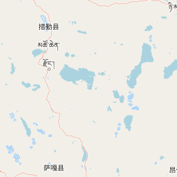
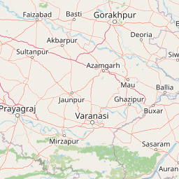
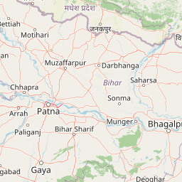
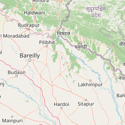
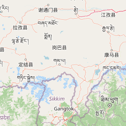
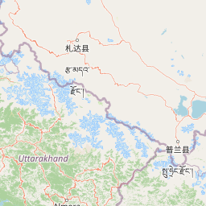
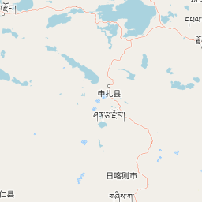
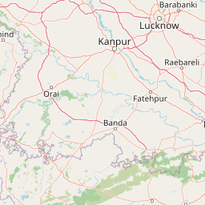
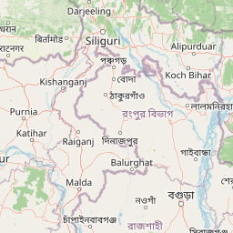
Below Warning Level and Steady | Above Warning Level and Steady | Above Danger Level and Steady |
Below Warning Level and Rising | Above Warning Level and Rising | Above Danger Level and Rising |
Below Warning Level and Falling | Above Warning Level and Falling | Above Danger Level and Falling |
Government of Nepal started hydrological and meteorological activities in an organized way in 1962. The activities were initiated as a section under the Department of Electricity. The section was subsequently transferred to the Department of Irrigation and Department Irrigation, Hydrology and Meteorology was formed. Later on in 1988, a separate department of Hydrology and Meteorology was established. The Department of Hydrology and Meteorology (DHM) is an organization under the Ministry of Energy,...
River Watchsee all
- Mahakali at Parigaon6.999 m
- Mahakali at Darchula (Dattu)4.266 m
- Naugra Gad1.933 m
- Chamelia at Karkale Gaun3.98 m
- Jamadi Gad2.167 m
- Surnaya Gad at Gajur Gaon2.045 m
- Kakrighat River2.589 m
- Rupali Gad at Rupal2.251 m
- Sirsagad River0.831 m
- Rangoon Khola at Kainepani1.208 m
- Chaudhar River at Daiji0.807 m
- Sihali River0.841 m
- Mahakali at Dodhara Chandani (4 Lane Bridge)5.388 m
- Kharpu Khola HS3.157 m
- Humla Karnali at Bihichhada3.51 m
- Kuwadi River at Rigin(209)3.444 m
- Rara Daha at Nizar-outlet0.552 m
- Rara Daha at Sen0.911 m
- Humla Karnali at Lalighat4.4 m
- Tila Nala at Raralihi Nagma3.085 m
- Sinja Khola at Diware2.217 m
- Tila Nadi at Serighat2.662 m
- Karnali at Asaraghat5.712 m
- Lohare Khola at Tallo Dungeshwor2.744 m
- Lohare Khola at Dailekh1.031 m
- Karnali at Benighat7.449 m
- West Seti River at Chainpur3.214 m
- Bauligad River1.146 m
- Sunigad River1.16 m
- Sakayal Gad at Dadaban1.496 m
- Kailash River2.088 m
- Budhiganga River at Kakarsant2.7 m
- Kalanga Gad2.928 m
- West Seti at Dipayal6.721 m
- West Seti at Banga5.35 m
- Thulo Bheri at Rimna4.944 m
- Sano Bheri at Simlighat4.14 m
- Saru Gad at Jajarkot2.882 m
- Karai River0.67 m
- Nikash Khola HS0.9 m
- Chingar River at Simlekhet(274)1.6 m
- Karnali at Chisapani8.206 m
- Karnali at Chisapani Bridge7.958 m
- Budhi Khola at Geruwa Intake2.499 m
- Mohana River at Malakheti1.816 m
- Doda (Machheli) River at East West Highway2.492 m
- Ghuruwa River at Kharetti0.987 m
- Kateni River at Ratanpur3.809 m
- Kandra River at Pahalmanpur1.884 m
- Pathariya River1.276 m
- Sarada Khola at Daredhunga1.728 m
- Aurahikhola at Godana0.422 m
- Babai at Matera-Tulsipur1.403 m
- Babai at Chepang3.115 m
- Babai at Bhada Bridge4.558 m
- Mankhola at Belgaun1.522 m
- Kiran Nala River(296)3.135 m
- Lungri River at Khungri (327)3.444 m
- Jhimruk Khola at Pyuthan2.437 m
- West Rapti at Bagasoti2.856 m
- Rangsing Khola at Tinkunne0.603 m
- Koili Nadi at Bangai4.245 m
- West Rapti at Kusum RLS3.106 m
- West Rapti at Kusum Rainfall2.581 m
- West Rapti River at Raptisonari3.167 m
- Dumre Khola at Kalimati1.187 m
- Tinau at Butwal2.907 m
- Kali Gandaki at Jomsom2.167 m
- Kali Gandaki at Tatopani (Ratopani)3.217 m
- Myagdi at Mangalghat2.339 m
- Kali Gandaki at Modi Beni4.726 m
- Modi Khola at Jhaprebagar( Nayapul)1.971 m
- Seti Khola at SetiBeni1.72 m
- Daaram Khola at Wamitaksar1.824 m
- Badigad at Rudrabeni0.88 m
- Ridi Khola at Satmure2.198 m
- Jyagdi Khola at Dangsing1.471 m
- Mardi Khola at Lahachowk2.688 m
- Madi River at Sisaghat2.678 m
- Madi river at Benipatan1.75 m
- Khudi Khola at Khudibazar1.85 m
- Marsyangdi at Bhakundabesi4.853 m
- Dordi Khola at Sherabeshi( Ambote bazar)2.577 m
- Marsyangdi at Bimalnagar7.901 m
- Chepe Khola at Garambesi2.551 m
- Budhi Gandaki at Aarughat3.2 m
- Trishuli Khola at Dhunche2.481 m
- Tadi Khola at Rautar1.165 m
- Likhu Khola at Pattawari0.729 m
- Tadi at Belkot2.205 m
- Trishuli River at Kali Khola7.279 m
- Narayani at Devghat5.392 m
- East Rapti at Rajaiya1.717 m
- Manahari Khola at Manahari1.121 m
- Lothar Khola at Lothar1.774 m
- Bagmati River at Sundarijal1.057 m
- Nagmati River at Sundarijal0.817 m
- Bagmati River at Gaurighat1.11 m
- Hanumante Khola at Jagati1307.666 m
- Hanumante Khola at Kausaltar1289.438 m
- Godawari Khola at Thaiba1344.015 m
- Khodku Khola at Jharuwarasi1333.075 m
- Balkhu Khola at Balambu1340.582 m
- Manohara Khola at Balkumari1.786 m
- Nakkhu at Bungmati0.152 m
- Bagmati River at Khokana1.425 m
- Kokhajor Khola at Hariharpur Gadi2.11 m
- Bagmati River at Bhorleni3.173 m
- Marin Khola at Kusuntar1.574 m
- Bagmati River at Padheradovan2.565 m
- Chandi Khola at Chapur121.205 m
- Lal Bakiya Khola at Nijghad150.144 m
- Lal Bakiya Khola at Jureli Bazar272.424 m
- Ratu River at Lalghad217.302 m
- Khado River at East West Highway111.723 m
- Kamala at Ranibas1.945 m
- Kamala River at Mai sthan448.965 m
- Tawa bridge U/s Tawakhola276.339 m
- Kamala River at Belsot2.396 m
- Triyuga Khola at Gaighat147.254 m
- Sabhaya Khola at Tumlingtar1.484 m
- Hinwa Khola at Pipletar2.14 m
- Arun at Turkeghat3.919 m
- Bagmati River at Sundarijal Bridge0.773 m
- Daraudi Khola at Naya Sangu2.084 m
- Dhobi Khola at Kapan1316.607 m
- Dhobi Khola at Chabahil1299.373 m
- Dudhaura Khola at Gadimai122.085 m
- Driga Khola at Tinpatan Bridge439.286 m
- Chadaha Khola at Belghari395.811 m
- Chadaha Khola at Sisau Bazar, Tinpatan396.841 m
- Baruwa Bridge at Gaighat188.564 m
- Barun River at Syaksila2.263 m
- Bhote Koshi at Bahrabise1.96 m
- Balefi at Jalbire4.128 m
- Sunkoshi River at Dolalghat2.11 m
- Sunkoshi at Pachuwarghat4.08 m
- Roshi Khola at Panauti3.704 m
- Tamakoshi at Busti3.541 m
- KhimtiKhola at Rasnalu3.963 m
- Sunkoshi at Khurkot6.014 m
- Sunkoshi at Tokshelghat4.322 m
- Imja River at Dingboche0.433 m
- Imja River at Pangboche2.071 m
- Rawa Khola at Simle Dovan DS3.298 m
- Rawa Khola at Gaikhure1.46 m
- Dudh Koshi at Rabuwabazar4.243 m
- Dudhkoshi at Jayaramghat Bridge4.248 m
- Sunkoshi River at Hampachuwar9.021 m
- Tamor River at Taplejung3.11 m
- Mewa Khola at Taplejung2.821 m
- Kabeli Khola at Taplejung3.793 m
- Tamor River at Majhitar6.689 m
- Tamor River at Triveni5.86 m
- Saptakoshi at Chatara (old)4.65 m
- Sardu Khola at Madan Bhandari Highway101.299 m
- Seuti Khola at Bihibare Bazar105.724 m
- Sunsari Khola at EW Highway77.401 m
- Keshaliya Khola at East West Highway106.94 m
- Budhikhola at Duhabi81.088 m
- Lohandra Khola at East West Highway123.615 m
- Lohandra Khola at Shisbeni1.182 m
- MaiKhola at Chisapani3.163 m
- Kankai River at Mainachuli2.877 m
- Biring River at East West Highway112.285 m
- Ninda khola at East West Highway121.434 m
- Riew khola (Bankatta)1.414 m
- Bagmati at Samanpur85.321 m
- Banganga at Bargadhaghat2.683 m
- Banganga at Bhagwanpur2.314 m
- Banganga at Pawara1.588 m
- Bel Nadi at Buddhabhumi1.136 m
- Dhungad River (258)2.227 m
- Garuda HS2.302 m
- Ghap HS3.594 m
- Gudung at EW Highway1.946 m
- HS at Babai East-West Highway (Bardiya National Park)6.321 m
- HS at Imja Lake0.956 m
- Jogbudha at Mayapuri2.425 m
- Kandha River at Mudhabazar1.222 m
- Kothi river at Lavani3.025 m
- Manusmara(Soti) River at Barathahawa91.609 m
- Marsyangdi River at Dharapani2.444 m
- Nalgad at Raulakhet1.604 m
- Pathariya River at Janakinagar1.665 m
- Radha river at EW High Way1.873 m
- Rolwaling River at Bedding1.12 m
- Roshi Khola at Kavre0.379 m
- Sailigad River(259.1)1.336 m
- Thuli Bheri at Tripurakot2.85 m
- Trishuli at Galchi361.079 m
Rainfall Watchsee all
- Baitadi (Gothalapani)5.2 mm
- Bangga Camp0 mm
- Khaptad0 mm
- Kolagaun at Jorayal0 mm
- Baliya0 mm
- Aurahikhola at Godana0 mm
- Khajura (Nepalganj)0 mm
- Baijapur0.6 mm
- Bargadaha0 mm
- Badigad at Rudrabeni0 mm
- Maina Gaun (D.Bas)0 mm
- Kumalgaon (rainfall)-
- Katti0 mm
- Kumra Gaun0 mm
- Belbhar0 mm
- BHAGAWANPUR0 mm
- Libang Gaun0 mm
- Koilabas0.6 mm
- Keur Gaun0 mm
- Ambapur-
- Beljhundi (Manikapur)15.2 mm
- Lamahi-
- Bagasoti0 mm
- Arun at Turkeghat0 mm
- Baglung0 mm
- Beni Bazar0 mm
- Kushma0 mm
- Bega0 mm
- Kuhun0 mm
- Bhairahawa (Agric)0 mm
- Khanchikot0.4 mm
- Kolhuwa (Sitapur)0 mm
- Bhagwanpur0 mm
- Anp Chour0 mm
- Baldyanggadi0 mm
- Archale-
- Banganga0 mm
- Bardaghat0.2 mm
- Khudi Bazar-
- Kunchha0 mm
- Bandipur0 mm
- Malepatan (Pokhara)0 mm
- Lumle1.4 mm
- Khairini Tar0 mm
- Besishahar0 mm
- Barpak0 mm
- Malunga0 mm
- Atraulitar0 mm
- Kotagaun0 mm
- Makwanpur Gadhi1.4 mm
- Madi Kalyanpur0 mm
- Arughat (rainfall)0 mm
- Baunepati0 mm
- Kirtipur0 mm
- Bahrabise0 mm
- Khumaltar0 mm
- Khopasi(Panauti)0 mm
- Babarmahal (DHM Office)-
- Khokana0 mm
- Kurle Ghat0 mm
- Khotang Bazar0 mm
- Katari0 mm
- Leguwa Ghat0 mm
- Machhuwaghat0 mm
- Letang0 mm
- Khadbari0 mm
- Lungthung-
- Anarmani Birta-
- Kechana0 mm
- Barphalyang-
- Bhairahawa_AWOS_100 mm
- Lamapatan-
- Kathmandu_AWOS_200 mm
- Lamabagar0.8 mm
- Lukla Airport1.797 mm
- Aiselukhark4.2 mm
- Bahuni0 mm
- Bahundangi0 mm
- Dadeldhura_AWS3 mm
- Chaurbandale0 mm
- Bijaypur (Raskot)-
- Chautha-
- Dailekh_AWS1.8 mm
- Dadimadi-
- Danda Gaun.0 mm
- Bimalnagar (Rainfall)0 mm
- Bijuwar Tar0 mm
- Bobang0 mm
- Darbang0 mm
- Bhimgithhe0.2 mm
- Bharse0 mm
- Daugha0 mm
- Deurali Nawalpur1.4 mm
- Chapakot0.4 mm
- Chame0.6 mm
- Damauli0 mm
- Dandaswara0.6 mm
- Bhujung0 mm
- Bhorletar0 mm
- Chumchet-
- Chisapanigadi-
- Daman0 mm
- Birgunj2.6 mm
- Chautara0 mm
- Changu Narayan0 mm
- Buddhanilakantha0 mm
- Chainpur (East)0.2 mm
- Chatara0 mm
- Chepuwa0 mm
- Damak0 mm
- Chomrong2.6 mm
- Bharatpur Airport-
- Chandarku6.4 mm
- Bhotang1 mm
- Chandrapur.0 mm
- Biratnagar_Airport0 mm
- Chandragadi Airport0 mm
- Dharmpani0.4 mm
- Dodhara2 mm
- Gaibande0.4 mm
- Gokuleshwar1 mm
- Gaira0 mm
- Gamadi Shree Nagar0 mm
- Dunai0 mm
- Gothi0 mm
- Dillichaur0 mm
- Gela1 mm
- Dhakeri0 mm
- Ghorai (Dang)2.2 mm
- Gangadi0 mm
- Galkot0 mm
- Dudh Koshi at Rabuwabazar-
- Dumkauli0 mm
- Dumkibas2.4 mm
- Gandakot-
- Gorkha Agromet0 mm
- Gharedhunga5.4 mm
- Goga (Tilche)0 mm
- Ghalekharka2.8 mm
- Faleni7.6 mm
- Gilung0 mm
- Gaur-
- Duwachaur0 mm
- Godavari0 mm
- Godavari_TPB0 mm
- Dolal Ghat0 mm
- Dhulikhel0 mm
- Dhunibesi0 mm
- Dhap (Tarnamlang)2 mm
- Gausala0 mm
- Gaighat-
- Dhankuta0 mm
- Dharan_Bazar0 mm
- Dingla0 mm
- Dovan1.2 mm
- Dhangadhi airport0 mm
- Dhunge10.2 mm
- Gauradaha0 mm
- Hanman Nagar (Bhamka)0.4 mm
- Kallagoth (Krishnapur)0 mm
- JHINGRANA0 mm
- Karnali at Asaraghat0 mm
- Guthi Chaur0.2 mm
- Juphal Airport0.547 mm
- Hilsa (Yari)0 mm
- Jumla Airport1.802 mm
- Jamu (Tikuwa Kuna)0 mm
- Jajarkot0 mm
- Gulariya0 mm
- Gwati-
- Jagatipur0 mm
- Kalidamar-
- Itram (Surkhet Regional Office)0 mm
- Kabreneta-
- Jungar,Rolpa0 mm
- Hanspur0 mm
- Jalkundi0 mm
- Kamala river at Portaha0 mm
- Jomsom TPB0 mm
- Karkineta0 mm
- Hattilung2.4 mm
- Jagat (Setibas)0 mm
- Hetauda N.F.I.0.2 mm
- Govindabasti-
- Gumthang_AWS0 mm
- Kakani0 mm
- Jiri0 mm
- Jiri_TPB0 mm
- Hardinath0 mm
- Kabre0 mm
- Haraincha0 mm
- Ilam Tea Estate0 mm
- Ilam Tea State_AWS0 mm
- Himali Gaun0 mm
- Kanyam Tea State-
- Jomsom Airport-
- Gurjakhani0 mm
- Kanyam Tea Estate0 mm
- Jeetpur0 mm
- Kapan0 mm
- Mai Pokhari0 mm
- Oli Gaun (Patkani)0 mm
- Nagma0 mm
- Manma_AWS0 mm
- Naubasta0 mm
- Nepalgunj(Reg.Off.)0 mm
- Manpur0 mm
- Narayani at Devghat0 mm
- Nayabasti (Dang)0 mm
- Padhampur0 mm
- Mari0 mm
- Marin Khola at Kusuntar-
- Muna0 mm
- Parasi2.4 mm
- Marchabar0 mm
- Namrung0.2 mm
- Panchamul-
- Panchase0 mm
- Narayani Field Office0 mm
- Meghauli0 mm
- Nawalpur0.2 mm
- Mandan0 mm
- Panchkhal0 mm
- Naikap-
- Nagarjun0 mm
- Melung3.4 mm
- Nepalthok0 mm
- Manusmara0 mm
- Pekarnas0 mm
- Okhaldhunga0 mm
- Mane Bhanjyang0 mm
- Muga0 mm
- Olangchunggola0 mm
- Mangalsen_AWS0 mm
- OHM-Kohalpur0 mm
- Pokhara_AWOS_040 mm
- Nagarkot_AWS0 mm
- Melamchi-Ghyang0 mm
- Manthali Airport0 mm
- Murkuchi Bazar0 mm
- Pokhara_AWOS_220 mm
- SUGALI (SUTAR)-
- Simikot Airport0.007 mm
- Rajapur0 mm
- Rani Jaruwa Nursery0 mm
- Ranimatta2 mm
- Rambhapur0 mm
- Rajaiya (rainfall station)0 mm
- Shera Gaun0 mm
- Rulbang (Juwang)0.4 mm
- Seulibang-
- Shreekang0 mm
- Ridi0 mm
- Semari6 mm
- Sidhara0 mm
- Rangsing0 mm
- Sandhikharka0.2 mm
- Sikles0 mm
- Rainastar0 mm
- Sakhar at Tanahun0 mm
- Simara Airport_AWS5.6 mm
- Shaktikhor0 mm
- Shilinge0 mm
- Sankhu0 mm
- Sangachok0 mm
- Sanischare0 mm
- Rake0 mm
- Rampur_AWS0 mm
- Roshi0 mm
- Singati0 mm
- SindhuliGadi4 mm
- RaniChuri0 mm
- Salleri (Phaplu)0 mm
- Rupani Bazar0 mm
- Sakfara0 mm
- THALARA0 mm
- West Seti at Dipayal0 mm
- Talcha0 mm
- West Rapti at Kusum Rainfall0 mm
- Surkhet Airport (Birendranagar)0 mm
- Taratal0 mm
- Tulsipur0 mm
- Tharmare0 mm
- Swargdwari0 mm
- Sukhabare0 mm
- Thakmarpha-
- Tatopani (Ratopani)0 mm
- Tribeni (Parbat)0 mm
- Tamor River at Majhitar0.2 mm
- Tilottama0 mm
- Tribeni (Nawalpur)0 mm
- Taal0.6 mm
- Yangjakot7.4 mm
- Thaprek0 mm
- Syamgha0 mm
- Thori0 mm
- Thamachit0 mm
- Tarke Ghyang0 mm
- Thokarpa0 mm
- Sundarijal (Mulkharka)-
- Sundarijal0 mm
- Tikathali0 mm
- Tulsi0 mm
- Udayapur Gadhi0 mm
- Siruwa-
- Tribeni (Dhankuta)0 mm
- Tarahara0 mm
- Tapethok0 mm
- Soktim Tea State0 mm
- Sundarpur0.6 mm
- Takukot0 mm
- Tumlingtar-
- Taulihawa_AWS0 mm
- Thankot AWS0 mm
- Tathali0 mm
- Arghakhanchi0.2 mm
- AWS at Dalli0.6 mm
- Baidauli0 mm
- Baksila2 mm
- Banskharka0 mm
- Bhaise-
- Katarniya - Dhakaila0 mm
- Kyangjing_Snow0 mm
- Lamidanda0 mm
- Bhorleni0.8 mm
- Bolde9.4 mm
- Budianp0 mm
- DanpheLek_Snow0.13 mm
- Daulatpur0 mm
- Dumariya0 mm
- Gaduwa (Gadhawa), Dang0 mm
- Gobre0 mm
- Gothikanda0 mm
- Hurikot_Snow0 mm
- Jyamirkhali0 mm
- Manekharka-
- Maurey Lek1.6 mm
- Nala0 mm
- Noshyampati2 mm
- Nurpugaun2.6 mm
- Rajuwara, Pyuthan-
- Ramaroshan-
- Rangai0 mm
- Sankhu-DHM0.8 mm
- Sermathang3.6 mm
- Shey Phoksundo Lake0 mm
- Simalpani0 mm
- Siraha_Hydro0 mm
- Surkhet at Ratanangla-
- Tallo Khokseli0 mm
- Tilicho_Snow0.32 mm
- Trishuli at Kali Khola (Rainfall)0 mm